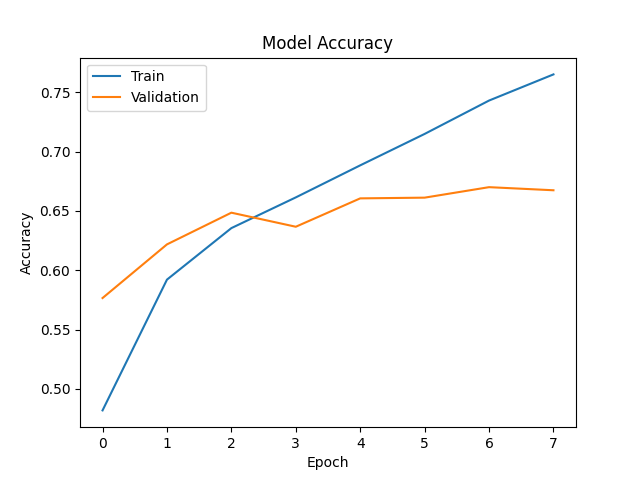
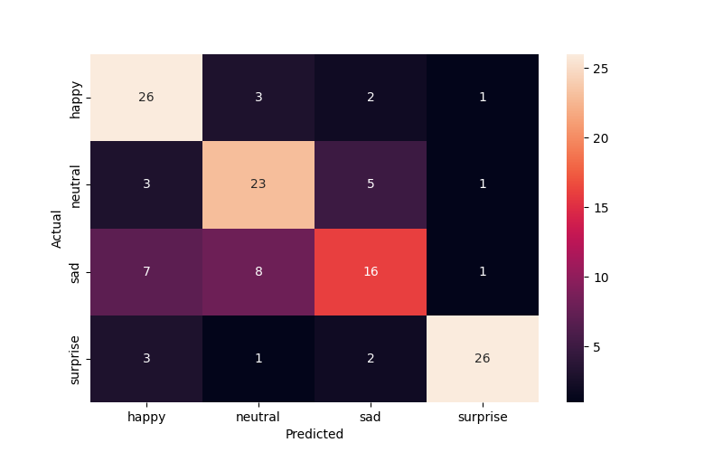

        <html>
        <head><title>Model Summary - 2024-03-03 15:49:40</title></head>
        <body>
        <h1>Model Summary</h1>
        <pre>Model: "sequential"
_________________________________________________________________
 Layer (type)                Output Shape              Param #   
=================================================================
 conv2d (Conv2D)             (None, 46, 46, 32)        320       
                                                                 
 max_pooling2d (MaxPooling2  (None, 23, 23, 32)        0         
 D)                                                              
                                                                 
 conv2d_1 (Conv2D)           (None, 21, 21, 64)        18496     
                                                                 
 max_pooling2d_1 (MaxPoolin  (None, 10, 10, 64)        0         
 g2D)                                                            
                                                                 
 flatten (Flatten)           (None, 6400)              0         
                                                                 
 dense (Dense)               (None, 64)                409664    
                                                                 
 dense_1 (Dense)             (None, 4)                 260       
                                                                 
=================================================================
Total params: 428740 (1.64 MB)
Trainable params: 428740 (1.64 MB)
Non-trainable params: 0 (0.00 Byte)
_________________________________________________________________
</pre>
        <h2>Test Accuracy</h2>
        <p>
1/4 [======>.......................] - ETA: 0s - loss: 0.7540 - accuracy: 0.6875
4/4 [==============================] - 0s 1ms/step - loss: 0.7726 - accuracy: 0.7109
</p>
        <h2>Accuracy Plot</h2>
        
        <h2>Classification Report</h2>
        <pre>              precision    recall  f1-score   support

       happy       0.67      0.81      0.73        32
     neutral       0.66      0.72      0.69        32
         sad       0.64      0.50      0.56        32
    surprise       0.90      0.81      0.85        32

    accuracy                           0.71       128
   macro avg       0.72      0.71      0.71       128
weighted avg       0.72      0.71      0.71       128

</pre>
        <h2>History</h2>
        <pre>Epoch 1: loss: 1.1507, accuracy: 0.4820, val_loss: 1.0301, val_accuracy: 0.5767
Epoch 2: loss: 0.9615, accuracy: 0.5922, val_loss: 0.9202, val_accuracy: 0.6219
Epoch 3: loss: 0.8789, accuracy: 0.6356, val_loss: 0.8702, val_accuracy: 0.6486
Epoch 4: loss: 0.8153, accuracy: 0.6615, val_loss: 0.8792, val_accuracy: 0.6367
Epoch 5: loss: 0.7593, accuracy: 0.6885, val_loss: 0.8317, val_accuracy: 0.6606
Epoch 6: loss: 0.7015, accuracy: 0.7149, val_loss: 0.8422, val_accuracy: 0.6612
Epoch 7: loss: 0.6458, accuracy: 0.7431, val_loss: 0.8351, val_accuracy: 0.6701
Epoch 8: loss: 0.5930, accuracy: 0.7651, val_loss: 0.8814, val_accuracy: 0.6675
</pre>
        <h2>Confusion Matrix</h2>
        
        </body>
        </html>
        